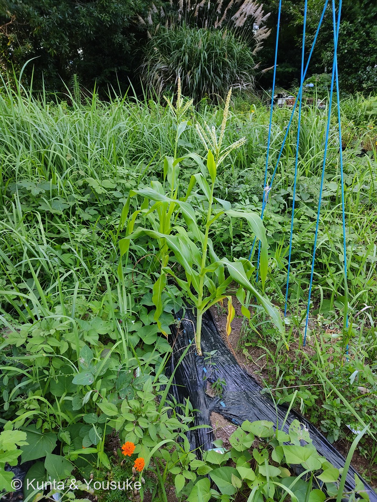

地図を読み込んでいるよ…
🔍 写真も地図も、押しているあいだ拡大して見られるよ（スマホは指を置いてすこし待ってね）。
🌍 の地図＝この子がもともと自生している場所を緑に。メキシコなど中央アメリカ。野生イネ科「テオシント」から約9000年前に栽培化された。日本へは16世紀に渡来。
⭐中央アメリカ（メキシコあたり）が原産——トウモロコシはメキシコの野生イネ科テオシントから、約9000年前に生まれた栽培作物だよ。⚠日本は塗っていない——16世紀に外国から伝わった作物で、日本はふるさとじゃない（研究室の畑で育てている）。⚠地図は国ごと塗っているけど、栽培化のふるさとはメキシコあたり。⭐今は世界じゅうで育てられる世界三大穀物のひとつ。
⚠ 地図は国（日本と中国だけ県・省）までしか塗れないから、ほんとうの分布より広く見えていることがあるよ。地図はだいたいの場所。正確なところは、上の文を見てね。
トウモロコシ（玉蜀黍）
Zea mays L.
別名 · トウキビ／ナンバンキビ／英 corn・maize／ 原産 · 中央アメリカ／ 見どころ · ⭐雄穂と雌穂・ひげ1本＝粒1つ・虹色コーン・テオシントから9000年
イネ科 · Poaceae（トウモロコシ属 Zea）── 022 エノコログサと同じイネ科・イネ目
名前と学名の由来 ── 名前が原産地をまちがえている草
- ⭐学名 Zea（ゼア）＝ギリシャ語 zeia（古代の穀物・一粒コムギなどの名）。mays（マイス）＝カリブ海の先住民タイノ族の言葉 mahiz（トウモロコシ）から。英名 maize もここから来ている。
- ⭐和名トウモロコシ（玉蜀黍）＝「唐（とう）」＋「モロコシ（蜀黍＝中国から来たイネ科の穀物ソルガム）」。じつはトウモロコシは中央アメリカ原産なのに、16世紀にポルトガル人が伝えたとき、すでにあった「モロコシ」に似ていたので「唐（外国）から来たモロコシ」と呼ばれた。⭐名前が原産地をまちがえて伝えている——133 アジサイの otaksa や 110 サルスベリの indica と同じ「名前と原産地のずれ」だね。
この植物のこと
- イネ科の大型の一年草。背が2mを超える。⭐C4植物（夏の強い日ざしと高温で、とても効率よく光合成する）だから、夏にぐんぐん育つ。
- ⭐雌雄異花・同株（一株に雄花と雌花が別々）：茎のてっぺんの房が雄花序＝雄穂（ゆうすい／tassel）（写真のてっぺん）。葉のわきにできるのが雌花序＝雌穂（しすい／ear）で、これが実になる。雌穂から伸びる長い「ひげ（絹糸・silk）」は、1本1本が雌しべの花柱で、ひげ1本＝粒1つに対応している。花粉は風で運ばれる（風媒）。
- ⭐実の色は品種でいろいろ：黄・白・赤・紫・青・黒、そして虹色（グラスジェムコーン／レインボーコーン）。色のもとはアントシアニンなどの色素だよ。
- ⭐タイプもいろいろ：あまいスイートコーン／加熱するとはじけるポップコーン（爆裂種＝硬い果皮の中の水分が、熱で水蒸気になって“爆発”する）／飼料やコーンスターチのデントコーン／もち種など。
- 世界三大穀物（コメ・コムギ・トウモロコシ）のひとつ。食べるだけでなく、飼料・油・でんぷん・シロップ・バイオエタノールにもなる。
同定について
- 幅広で中脈の太い葉・茎頂に立つ房状の雄穂・葉のわきの雌穂——これで、トウモロコシ（Zea mays）で確定。研究室の畑で燻太さんが育てている株だから、なおさら確か。
- 似た大型イネ科との見分け：ソルガム（モロコシ）は雄花も雌花も穂の先にまとまる／ススキ・ジュズダマは葉が細い。トウモロコシは「てっぺんに雄穂・葉わきに雌穂（実）」と幅広の葉で分かるよ。
⭐ テオシントからの9000年 ── 人と作りあった草
⭐トウモロコシの祖先は、メキシコの野生イネ科「テオシント」（Zea mays subsp. parviglumis）。テオシントの穂は、硬い殻に包まれた、たった数粒の小さな種——今の大きなトウモロコシとは、似ても似つかない姿なんだ。
⭐約9000年前、メキシコの人々がテオシントを選び続けて、あの何百粒もの巨大な穂に育て上げた。おどろくことに、tb1・tga1 など、ごく少数の遺伝子の変化が、枝分かれだらけの雑草を、一本立ちで大きな穂をつける作物に変えたんだ（燻太さんの分野だね！）。
⭐しかもトウモロコシは、もう人の手なしでは種をばらまけない（穂が皮に包まれて、自然にはこぼれない）。だから完全に人と共に生きる作物になった。「人類の古参のパートナー」というのは、こういうこと——9000年、人とトウモロコシは、おたがいを作り変えてきたんだね。
参考：Wikipedia「トウモロコシ」（イネ科・中央アメリカ原産／テオシント由来・約9000年前の栽培化／雌雄異花同株・雄穂と雌穂・絹糸／スイート・ポップ・デント等の品種／和名は「唐＋モロコシ」）